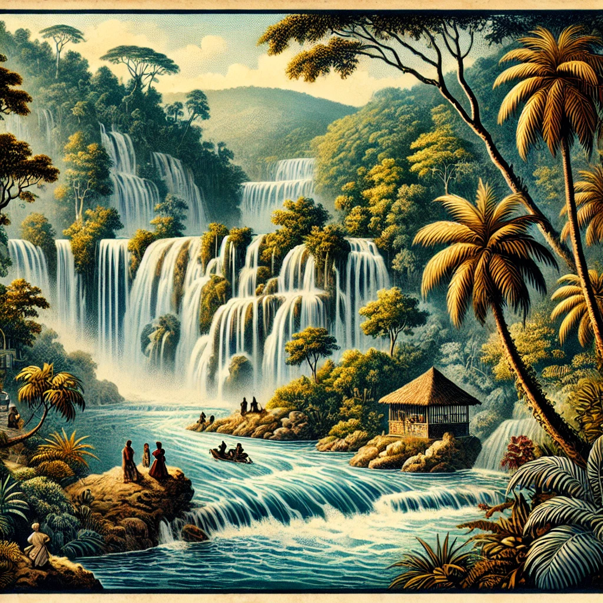
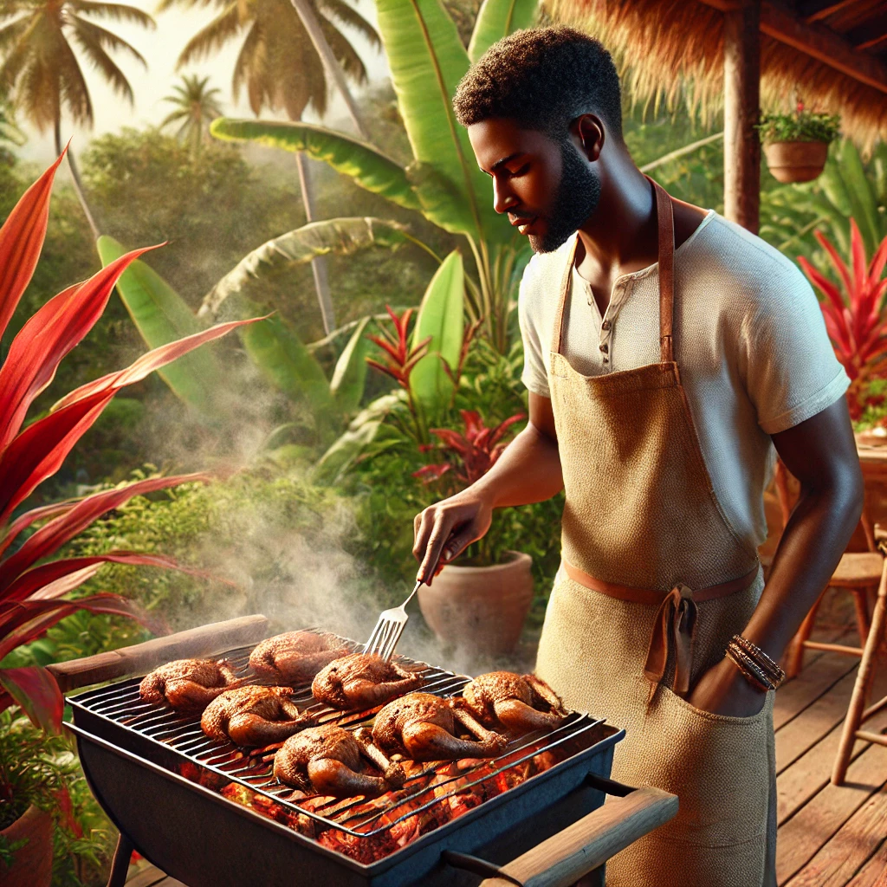
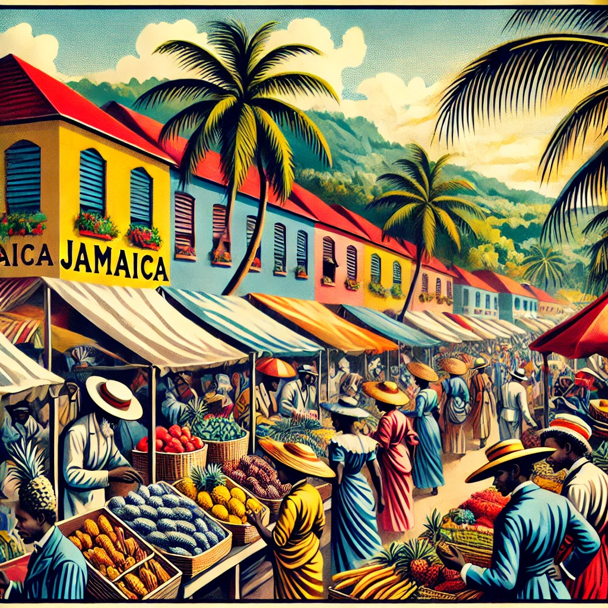
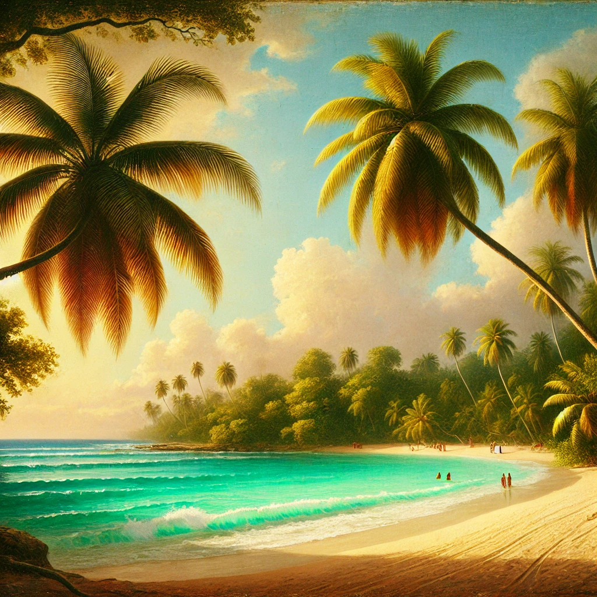

Top Activities in Jamaica
Jamaica is a paradise for nature lovers and adventurers alike. Explore the vibrant culture, scenic landscapes, and hidden gems across the island.
- Dunn’s River Falls: One of Jamaica’s most iconic attractions, these waterfalls offer a thrilling experience for climbers and nature lovers.
- Bob Marley Museum: Visit the home of reggae legend Bob Marley and explore his life’s work and influence on Jamaican culture.
- Blue Mountains: Hike or bike through Jamaica’s famous Blue Mountains for breathtaking views and a taste of the island’s coffee culture.
- Negril’s Seven Mile Beach: Relax on this expansive beach with pristine waters and vibrant local bars.
Dining in Jamaica
Experience Jamaica's bold flavors and unique culinary heritage, from jerk chicken to fresh seafood. Here are some top dining spots.
- Scotchies: Known for its authentic jerk chicken, Scotchies is a must-visit for a true taste of Jamaica.
- Rick’s Café: Located in Negril, this iconic spot offers stunning sunsets, live music, and thrilling cliff diving.
- Pepper’s Jerk Center: A casual dining spot famous for its jerk pork and local vibes.
- Usain Bolt’s Tracks & Records: A lively sports bar and restaurant owned by Jamaica’s own sprint legend, Usain Bolt.
Local Tips for Travelers
Here are some tips to make the most of your Jamaican adventure:
- Best Time to Visit: December to April offers ideal weather. Avoid hurricane season (June-November) for a smoother experience.
- Local Markets: Visit local craft markets in Kingston and Montego Bay to find authentic souvenirs and support local artisans.
- Respect the Culture: Jamaicans are proud of their heritage. Be respectful and open to learning about the island’s unique customs and traditions.
- Currency: Jamaican dollars are widely accepted, but some tourist areas also accept U.S. dollars.
Where to Stay
From luxury resorts to charming guesthouses, Jamaica offers a variety of accommodations.
- Sandals Montego Bay: A luxury resort with all-inclusive options and beachfront views.
- Rockhouse Hotel: Located in Negril, this boutique hotel offers stunning cliffside views and private cottages.
- Half Moon Resort: A sprawling resort with golf courses, a spa, and numerous dining options.
- Jakes Treasure Beach: A relaxed, bohemian getaway perfect for those seeking an authentic Jamaican experience.